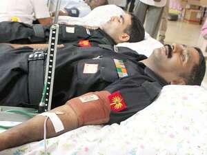
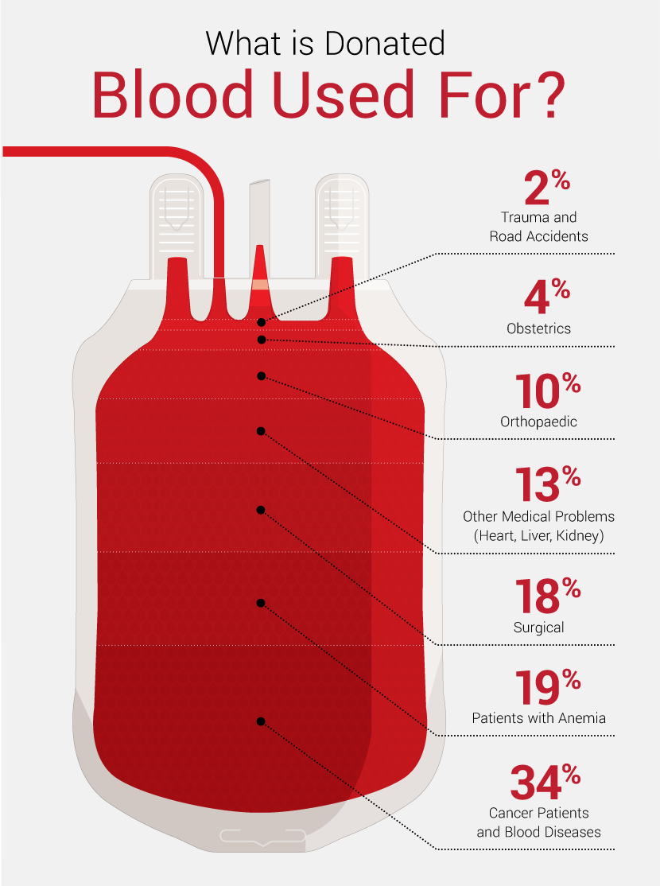

2,000 students donate blood
VISAKHAPATNAM, SEPTEMBER 02, 2020 01:31 IST
Over 2000 students from different colleges, including engineering and other professional colleges, participated in a mega blood donation camp that was organised by Andhra University, here on Friday.
Inaugurating the camp, MP K. Haribabu said no one should in the city die due to shortage of blood. It is our duty to see that there is sufficient stock of blood in various blood banks throughout the year....
Mr. Haribabu said along with the overall development of the city, incidences of accidents and fatal diseases, where there is need of urgent transfusion of blood is also on the rise. And the balance between demand and supply should always be maintained.
Appreciating enthusiasm of students, he urged them to come forward and encourage the culture of blood donation and also create awareness among others that there is nothing wrong in donating blood. “It is in fact good to donate once in a while and one should know that a donor can save at least three lives,” he said.
Over 400 army personnel takes part
MATHURA,Aug 06, 2019

To mark the golden jubilee of 1965 Indo-Pak War, a blood donation camp was organised today at Mathura, Bhatinda, Talbhet, Alwar and other military stations.
More than 400 serving personnel voluntarily donated their blood with Lieutenant General AB Shivane, Vishisht Seva Medal, General Officer Commanding Strike 1, being the first donor of the day....
A total of 300 units of blood were collected and donated to AFTC Delhi and Blood Bank Mathura.The camp was organized by the ARTRAC. The Army band was also on display on the Ridge. A drawing and sketching competition for the children of all ranks of the headquarter ARTRAC was organized on the occasion.
Zarina Hariz, Regional President of the Army Wives Welfare Association, was the Chief Guest. She gave away prizes to the winners of the competition.
Blood Donation Camp
JALANDHAR, 7th Sept, 2019

A Voluntary blood donation camp is being organized by “Samarpan …a lifeline”an initiative of Community Service Cell, Division of Student Affairs,Lovely Professional University, Jalandhar. Do you know that,
o Every 3 out of 10 people in India need blood?
o 75% of the voluntary donors in our country donate only once per year?
o This shortage can be overcome if just 2% of our country's youth donate blood?
About Us
We Are The Hero Red Cross Team
Each day, thousands of people – people just like you – provide compassionate care to those in need. Our network of generous donors, volunteers and employees share a mission of preventing and relieving suffering, here at home and around the world. We roll up our sleeves and donate time, money and blood. We do this every day because the Red Cross is needed - every day.
Popular Post

Blood Donation Camp By Neelima Hospital

A successful blood donation camp at IIITB
Follow Us